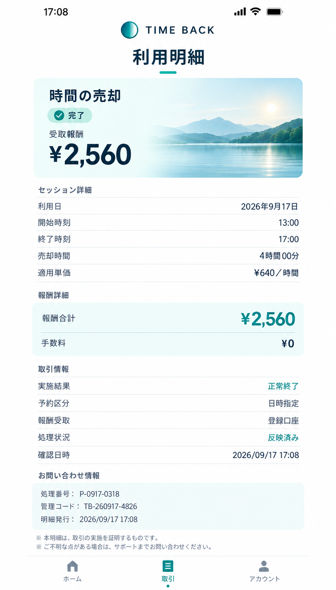

仕事と暮らし
TIME BACKを使ってみた感想
最近、仕事の締切が重なる日にTIME BACKを使っています。知り合いに使い心地を聞かれたので、料金も含めて、今のところの感想を書いておきます。
私はフリーでデザインの仕事をしています。修正がまとめて来たり、急ぎの案件が入ったりすると、予定していた作業がその日のうちに終わらないことがあります。
そういうときに時間を買うと、後回しにするつもりだった作業まで進められます。急にアイデアが浮かぶわけではありませんが、手を動かす時間が取れるのは助かります。
便利だけど、毎日は使わない
よく買うのは1時間分で、料金は1,650円。初めて見たときは、ちょっと高いなと思いました。2時間まとめて買うと3,000円ですが、必要以上に買っても仕方ないので、その日の仕事量を見て決めています。
今は週に一、二回くらいです。仕事の報酬から考えて割に合うか、というのは毎回気にしています。何となくスマホを見て終わるのはもったいないので、使う前にやることを並べておくようになりました。
時間を売るほうも試しています
一方で、仕事が落ち着いている日は、空いている時間を売ることもあります。先日は午後の予定がなくなったので、自宅で13時から17時までの4時間を設定しました。
開始前にソファに座って、次に気がついたときには終了していました。待っていた感じがないので、最初は変な気分でしたが、アプリの履歴にはちゃんと完了と出ていました。
その日の明細がこちらです。口座やアカウントの情報が出ているところは省いています。

4時間で2,560円でした。これを購入料金の足しにしています。買う料金と売る報酬は同じではないので、売った分だけ同じ時間を買い戻せる、というわけではありません。
無理に予定を空けてまで売るつもりはなく、今は本当に何もすることがない日に使うくらいです。
今のところは、必要な日にだけ
私には、締切前の選択肢が一つ増えた、という感じです。これがあるからと仕事を詰め込みすぎないようにはしたいですね。
料金は利用する時間によって変わるので、気になる方は公式の料金・報酬も確認してみてください。またしばらく使って、気づいたことがあれば書こうと思います。